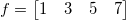

デコンボリューションは、コンボリューションの効果を元に戻す処理を行います。これは、通常、分かっているコンボユーションから分かっている応答信号を使って信号を元に戻します。
例えば、元の信号が
 ,
and the response is

それらの線形のコンボリューションは次のようになります。

g と y だけが分かっていて、f を元に戻したい場合、デコンボリューションが使われます。
計算を行うと、次が得られます。
デコンボリューションは線形または循環のどちらかです。元の信号を正確に戻すには、デコンボリューションは、もともと入力信号を生成したコンボリューションと同じタイプにする必要があります。
|
Note:デコンボリューションはノイズの影響を受けやすく、堅牢ではないので、実際にはデコンボリューションが常に元のデータセットに戻せるという保証はありません。さらに、コンボリューションがラップされた応答で実行されると、同じ応答を持つ入力信号をデコンボリューションすると、 ラップ応答オプションがデコンボリューションダイアログで選択されていたとしても、必ずしも元のデータを戻すとは限りません。 |
デコンボリューションを使うには、
deconv -d
|
このセクションで説明している項目 |